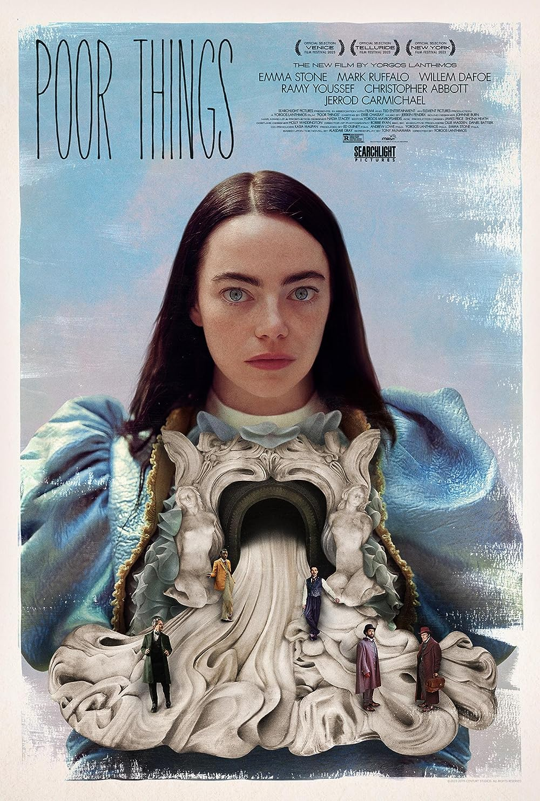

Top 10 Movies of 2023
-

Oppenheimer
The story of American scientist, J. Robert Oppenheimer, and his role in the development of the atomic bomb.
Learn More -
Past Lives
Nora and Hae Sung, two deeply connected childhood friends, are wrested apart after Nora's family emigrates from South Korea. Twenty years later, they are reunited for one fateful week as they confront notions of love and destiny.
Learn More -
Killers of The Flower Moon
When oil is discovered in 1920s Oklahoma under Osage Nation land, the Osage people are murdered one by one - until the FBI steps in to unravel the mystery.
Learn More -

Poor Things
The incredible tale about the fantastical evolution of Bella Baxter, a young woman brought back to life by the brilliant and unorthodox scientist Dr. Godwin Baxter
Learn More -

Anatomy of a Fall
A woman is suspected of her husband's murder, and their blind son faces a moral dilemma as the main witness.
Learn More -
Spider-Man: across the spider-verse
Miles Morales catapults across the Multiverse, where he encounters a team of Spider-People charged with protecting its very existence. When the heroes clash on how to handle a new threat, Miles must redefine what it means to be a hero.
Learn More -
The Holdovers
A cranky history teacher at a remote prep school is forced to remain on campus over the holidays with a troubled student who has no place to go..
Learn More -
Mission: Impossible-Dead Reckoning Part One
A cranky history teacher at a remote prep school is forced to remain on campus over the holidays with a troubled student who has no place to go..
Learn More -

About Dry Grasses
A young teacher hopes to be appointed to Istanbul after mandatory duty at a small village. After a long time waiting he loses all hope of escaping from this gloomy life. However, his colleague Nuray helps him to regain perspective.
Learn More -

John Wick: Chapter 4
John Wick uncovers a path to defeating The High Table. But before he can earn his freedom, Wick must face off against a new enemy with powerful alliances across the globe and forces that turn old friends into foes.
Learn More